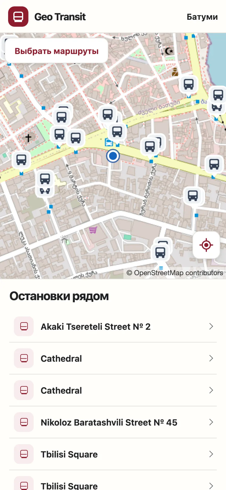
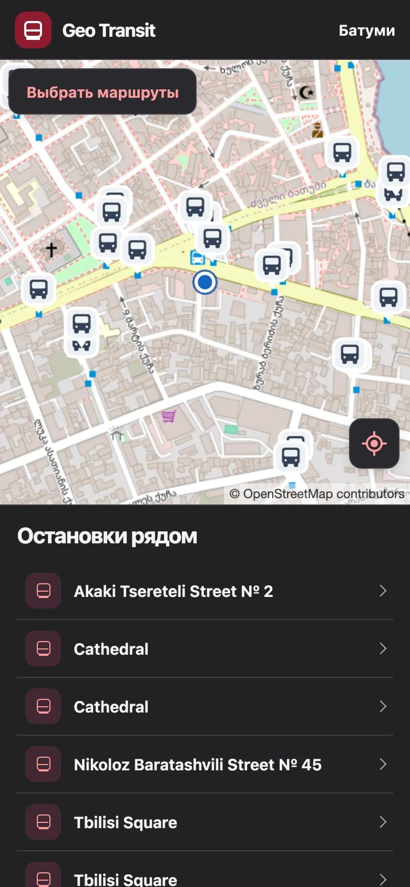
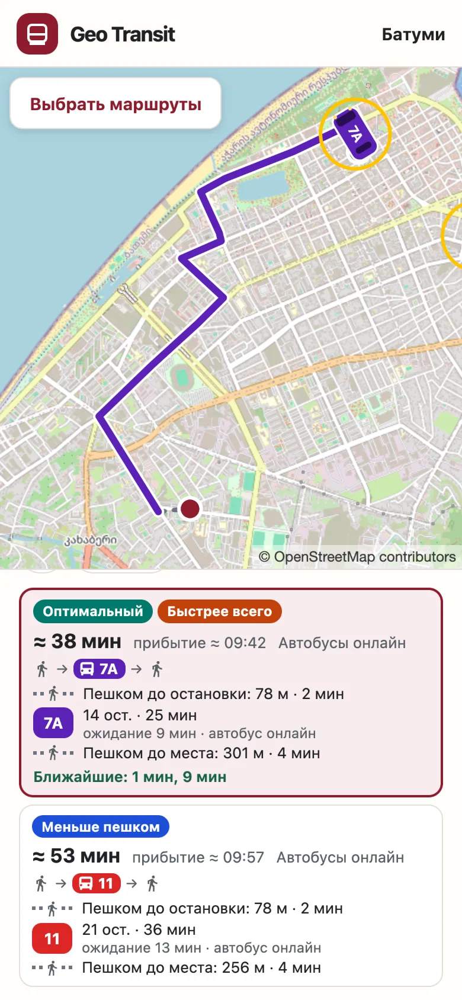
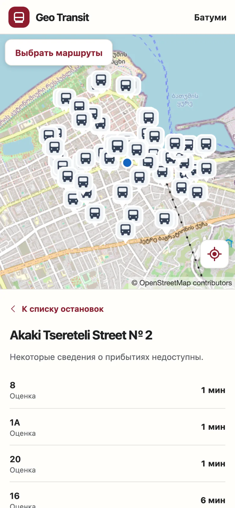
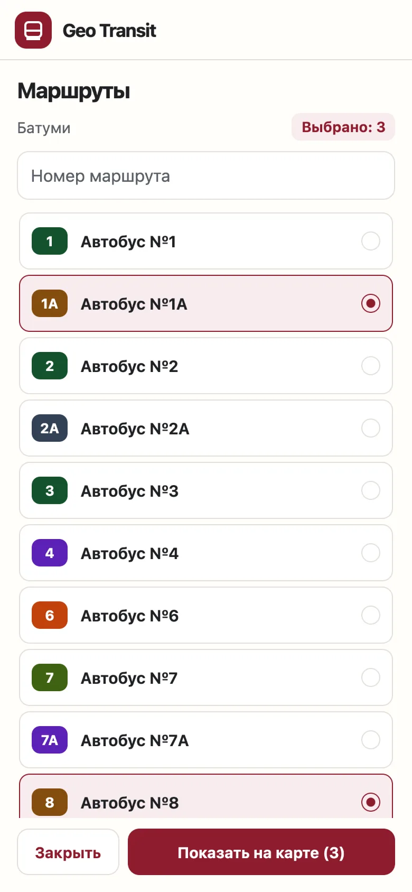
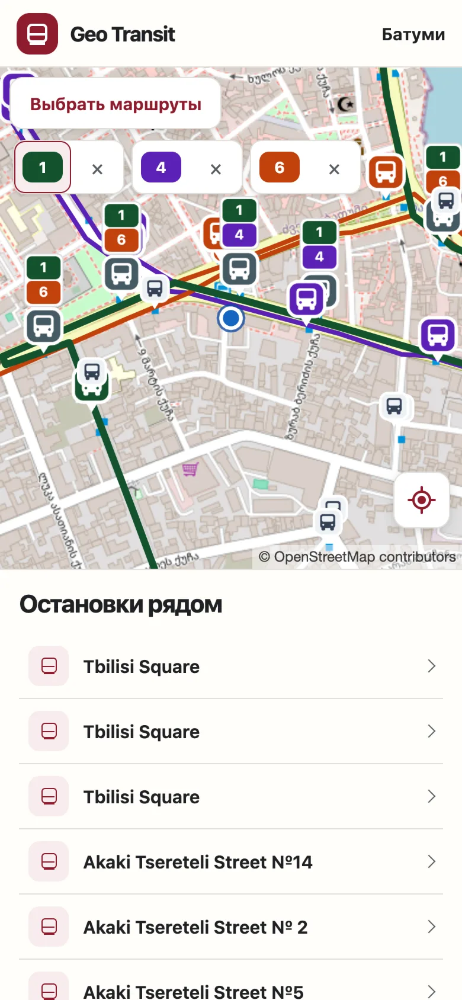

Батуми, Грузия
Автобусы Батуми на карте — прямо сейчас
Geo Transit показывает, где едут автобусы, примерно когда они будут на вашей остановке и как добраться из точки А в точку Б.
- Без регистрации
- Русский, English, ქართული
- Светлая и тёмная тема



Всё, что нужно на остановке
Четыре вещи, ради которых открывают Geo Transit. Каждая — на настоящих данных Батуми.
-
Автобусы в движении
Все автобусы города на одной карте. Видно, где сейчас едет нужный номер и сколько машин на линии.
-
Когда придёт автобус
Откройте остановку рядом — увидите номера маршрутов и сколько минут до прибытия.
Время — оценка по движению автобусов, а не официальное расписание.

-
Только ваши маршруты
Отметьте нужные номера — их линии и автобусы на карте окрасятся в цвета маршрутов, остальное отойдёт на второй план.


Из точки А в точку Б
Удерживайте палец на карте, чтобы отметить начало и конец пути. Geo Transit предложит варианты на автобусах и подпишет, чем каждый хорош.
- Оптимальный
- Быстрее всего
- Меньше пешком
- Без пересадок
- Пешие участки
- Сколько метров и минут идти до остановки, между остановками и до места.
- Ближайшие автобусы
- Ожидание и время в пути с учётом автобусов, которые уже едут к остановке.
- Точки не сохраняются
- Начало и конец пути нужны только для расчёта и нигде не хранятся.
Сейчас в веб-версии и Telegram; в приложениях для Android и iOS — в работе. Всё время примерное и не является официальным расписанием.
Там, где вам удобно
Geo Transit работает на Android, iOS, в браузере и внутри Telegram. Логика общая, поэтому карта и время прибытия везде одинаковые.
-
Android
Приложение для телефонов на Android.
Ссылка появится здесь -
iOS
Приложение для iPhone.
Ссылка появится здесь -
Веб
В любом браузере на телефоне или компьютере, без установки.
Открыть сайт -
Telegram
Мини-приложение прямо в Telegram — ничего не нужно устанавливать.
Ссылка появится здесь